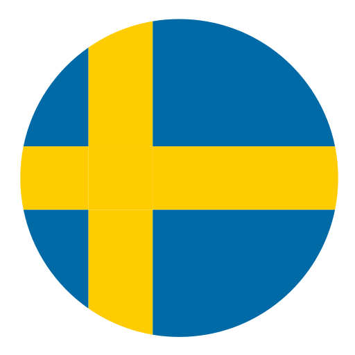

<ion-header>
  <ion-toolbar>
    <ion-title>
      <div style="float: left" *ngIf="language == 'en'">Weather</div>
      <div style="float: left" *ngIf="language == 'sw'">Väder</div>
      <span style="float: right"> 
        
        
      </span>
    </ion-title>
  </ion-toolbar>
</ion-header>

<ion-content>
  <ion-searchbar [(ngModel)]="searchedPlace" (search)="searchPlace($event)"></ion-searchbar>
  <ion-select [(ngModel)]="coord" (ionChange)="getWeatherFromDd($event)" interface="popover" [placeholder]="language == 'en' ? 'Select place' : 'Välj plats'">
    <ion-select-option *ngFor="let p of places;" [value]="p.coord">{{p.place}}</ion-select-option>
  </ion-select>
  <ion-card>
    <ion-card-content>
      <canvas id="weatherChartTempCanvas"></canvas>
    </ion-card-content>
  </ion-card>

  <ion-card>
    <ion-card-content>
      <canvas id="weatherChartWindCanvas"></canvas>
    </ion-card-content>
  </ion-card>

  <ion-card>
    <ion-card-content>
      <canvas id="weatherChartRainCanvas"></canvas>
    </ion-card-content>
  </ion-card>

</ion-content>